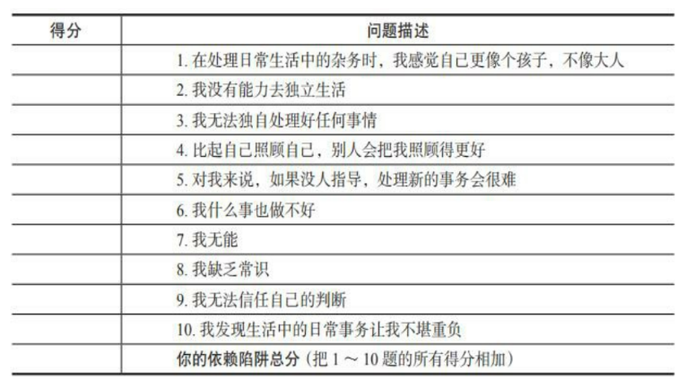
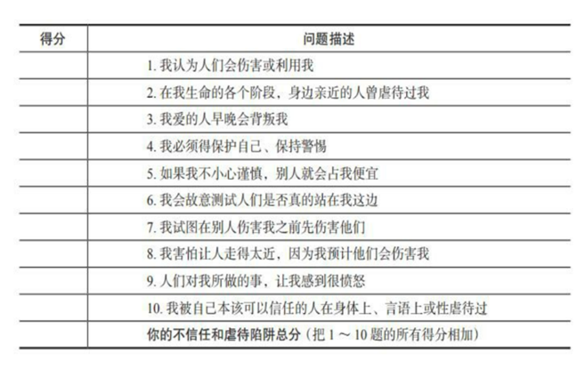

为了改变核心性格陷阱，我们必须愿意直面痛苦的回忆，即使它会唤起悲伤、愤怒、焦虑、内疚和困窘。我们必须愿意直面那些我们之前由于害怕失败、拒绝和羞辱而一直回避的情况。除非我们去面对这些痛苦的回忆和可怕的情境，不然我们注定会重复自我伤害的模式。针对改变的假设是关于树立个人愿景，改变不仅仅是消除性格缺陷，我们每个人都应当认清自己想成为怎样的人、自己为何而活，拥有一份人生蓝图是十分重要的。
改变的第一方面涉及人际关系，你认为自己想要什么样的人际关系？厘清自己想通过何种方式与他人建立联结。考虑一下亲密关系。你想要什么样的亲密关系？对你来说什么才是最重要的：激情和浪漫、陪伴，还是家庭？你在寻找伴侣时的目标是什么？相较于性兴奋，情感亲密度对你有多重要？要建立自己想要的人际关系，情感剥夺、不信任和虐待、遗弃和社交孤立陷阱是最大的障碍。
改变的第二个核心是自主性，独立到什么程度是最适合你的？独立自主和人际联结达到怎样的相对平衡才能让你最快乐？独立性可以让你自由地建立健康的人际关系、回避或摆脱不健康的人际关系。你可以根据自己的心意来自由选择是否继续某段关系，而不是仅仅因为需要而不得不继续下去。许多有依赖陷阱和脆弱陷阱的人会陷入破坏性关系的漩涡之中。他们害怕离开，害怕独自面对现实世界。
改变的第三部分是自尊感，和自主性一样，自尊可以给自由提供空间。缺陷陷阱和失败陷阱是获得自尊的障碍，自卑感和羞耻感将你压垮，导致你回避和浪费机会。羞耻感像一片沉重的乌云，包裹着你，让你动弹不得，无法与人建立联结，无法表达自己，无法满足自己的需求，更无法追求卓越。如何才能让自己感觉更好，接纳自己，而不会过分自我惩罚和缺失安全感？你有什么优点？如何开发它们？有什么缺点是可以改正的？
改变的第四个方面是坚持主见和表达自我，这要求你满足自己的需求、表达自己的感受。坚持自己的主张使你可以遵从自然属性，并且从生活中获得乐趣。屈从陷阱和苛刻标准陷阱会妨碍你坚持主见，在屈从陷阱中，你舍弃自身的需求和乐趣，以达到帮助他人或者避免被报复的目的。在苛刻标准陷阱中，你放弃自己的需求和乐趣，以获得认可和赞美，避免耻辱。成就和完美成了你的生活目标，代价是快乐和满足。激情、创造力、活泼顽皮和快乐可以让生活更有价值。适时放手，并且在生活中注入兴奋和快乐是很重要的。如果你忽视了坚持主见和自我表达，生活会变得沉重，你也会感到绝望。你的需求和身边人的需求也会失衡。改变包括：允许自己在不随意伤害他人的前提下，满足自己的基本需求和天性。
成长的第五个方面是关心他人，这与其他四点同样重要。生活最令人满足的地方之一就是学会赠予、同情他人。权利错觉可能会妨碍你向身边人表达关切，你怎样才能为这个世界做出贡献？
童年的痛苦可以解释改变如何如此艰难，要花如此之多的时间，但不能成为不努力改变，并且让固有的破坏性模式继续下去的理由。诚实面对自己，注重直面现实，面对自己的冷漠、悲伤、愤怒和焦虑。请仔细看看自己真实的情况，自欺欺人只会让你继续自我伤害，并且无法拥有真诚的人际关系。随着我们不断克服自己的性格陷阱，更了解自己的自然天性，我们也许不得不与过去决裂，我们可能需要舍弃童年时的模式所能带来的安全感，才能成为你理想中那个成熟的自己。独自改变是艰难的，争取他人的帮助会更容易。朋友和支持你的家人往往会比你自己更客观，他们可以帮助你分析问题，促使你直面那些自己在逃避的事情。
Amy的性格陷阱：自主性

依赖问卷得分是35分，但对我来说影响我最深远的点是9和5。具体体现在，我喜欢逃避困难的任务和承担责任。当我要做决定的时候，会优先征求别人的意见。即使我设法做了一个决定，我也需要不断寻求他人的肯定。在于家人和朋友相处时，我扮演了从属者的角色。一方面，我喜欢这些关系带来的安全感，但我也会愤怒。在陷于依赖者的角色之中，为了维持依赖，我容忍了别人的虐待、压抑或者剥夺自己的权利，依赖使得我在自由和自我表达付出了高昂的代价。在另一方面，为了对抗依赖，我把全部经历投入取得较高的成就和实现完全绝对独立之上，需要不断证明我可以自力更生，这种隐形的依赖让我痛苦不已。
依赖陷阱的起源：1）从小我离开父母，被迫独立，要做很多超越自己年龄的事维持自己的正常生活 2）母亲对我的过度干预，阻碍我独立和按照自己的意愿发展自我。独立性发展的两个阶段：1）建立一个安全的港湾 2）逐渐离开港湾，开始独立。如果你从未有过安全的港湾，如果你从未被允许安心停留在依赖的状态，对你来说，实现独立很难。是的，在我的成长过程中，一方面，我没能从父母那里得到充足的具有实际价值的指引和方向，不得不独立做超出自己年龄范围的决定。虽然在心里，我依然觉得自己是个孩子，但在家里，我必须表现得跟大人一样，被要求去理解和承担超出我能力范围得事。另一方面，母亲对我的干涉很多，从社交、运动、休闲娱乐和日常活动，生活中的方方面面她都干涉。为了赢得独立性，我不得不激烈跟母亲进行对抗。我在工作和恋爱中维持依赖和反依赖陷阱得方式包括：1）总是向更聪明和强大得人寻求建议和指导 2）轻视自己得成功和放大自己得缺点 3）避免独自面对挑战 4）不替自己做决定 5）依赖伴侣和朋友而生活 6）一直都在接受新的挑战、直面自己得恐惧，但同时感觉压力非常大
改变依赖陷阱的步骤：
1）理解童年时的依赖。感受自己内心深处那个无能为力、需要依赖的孩子。Amy: 在年龄很小的时候，爸妈把我留在外公外婆家，只记得每次爸妈离开我都嚎啕大哭。初中高中之后我被迫面对复杂的社会和人际关系，被迫尝试用超出自己能力范围的力量面对和保护自己。这种感觉如同一个困在悬崖里的人，或者说像个是一个没有任何保护装置的攀岩的人，我感受到自己的无助和弱小。
2）列举你在日常生活中依赖别人的情况、任务、责任和决策。1）学习游泳：我想寻找一个同伴，因为游泳对我来说是件让人害怕的事，我不敢独自面对。2）学习跳舞：同样的理由，有同伴让我更安心面对一个陌生的环境。但是上次独自去挑Bachata，我觉得在没有朋友的情况下，自己也可以跟新朋友交流和学习。3）签下公司的离职文件：我一直在回避这个问题，一方面想找律师替我申诉，因为我感觉到自己承受了很多精神的痛苦。另一方面，我不清楚自己的权利是否被破坏以及公司是否需要承担对我的责任。4）新学校的入学事项：我也在逃避这事，因为要承担一大笔花费，而且是不得不承担的。5）每一天的日程安排，我好像很擅长回应他人的安排和邀约，而不是自主设计自己的一天并按照自己的想法生活。
3）列举你因为害怕而回避的挑战、改变、恐惧。Amy:拒绝了一家PE公司的最后一轮面试，在面试前一晚上我做恶梦，梦见他们问了我很多我不懂的问题。事实上，我没有充足准备，所以为了避免失败我放弃了这个机会。
4）系统性强制自己不寻求帮助，独立处理日常任务，做决定。面对一直回避的挑战，做出一直回避的改变，从简单的开始。
5）当你独自成功完成一个任务时，引以为荣，不要轻视它。失败的时候，也不要放弃。继续尝试，直到你掌握为止。
6）回顾过去的人际关系，理清重复出现的依赖模式，列举要避免的性格陷阱。1)Feng：他是我高中就认识最好的朋友，我喜欢跟他分享我的点点滴滴，还有成长的每一步，是我感觉到安全的一个港湾。2）S：我对他有心理上的依赖，希望他认可我和接纳我，因为过去他不接纳和认可我。3）父母：我总是喜欢跟父母唱反调，是因为他们从来不认可我的努力和决定，总是单方面跟我表达他们的想法，而不考虑我到底如何想。所以，我从来没感觉到作为一个成年人，我在他们的世界里是个独立的存在，不仅是父母，家里的叔叔阿姨奶奶有着类似的想法。4）老板：我想表现得努力、上进和靠谱，希望老板可以信任我，所以我把重心放在了赢得认可之上，而忽略了行为本身就在表达我得价值，还有是否达到了跟老板共同得目标。“不急切需要别人的感觉真好。”
7）避开这样的恋人：让你产生强烈爱情的化学反应，但是是强大的和过度保护性的
8）当你找到可以平等对待你的恋人，给这段感情一次机会。承担属于你的责任，做出自主的决策。对我来说最应该注意的是，避免破坏这段关系的想法
9) 当你的恋人或老板拒绝给你提供足够的帮助，不要抱怨。不要总是向他（她）寻求建议和安慰。你必须意识到，别人并不欠你的，并不是必须要照顾你。人们有权期待你自己照顾自己。你现在在工作中遇到困难的第一反应是立刻寻求帮助。你可能甚至不会试着自己解决。我们希望你的反应是：首先试着自己解决。当你刚刚开始尝试独立的时候，会有一种去寻求肯定的冲动，请别人肯定你的做法是对的。这对你来说就像是一种药，它会降低你独立做事的焦虑。你需要停止使用这种药，去忍耐独立做事的焦虑。这种焦虑会过去的。要坚信，终究有一天，你将可以独立做事，而且只感到很少的焦虑。
10) 如果你是反向依赖型的，承认自己需要指引的需求。向别人寻求帮助。不要接受太多挑战，导致自己完成不了。把你的焦虑水平作为标尺，来衡量你可以接受多少挑战。
Amy的性格陷阱：社交孤立

社交孤立问卷得分53，除了第2和第5，其他得分都很高。其实我还蛮喜欢社交的，但是我是喜欢通过社交跟人建立更深的联系或者学习以及获取信息。关于我自己的成长，有两种解读：1）我出生和成长过程中跟其他人很不同，因为经常更换环境和朋友圈，但确实我比很多人强，实现了更高的成就。2）这种有别于他人的感觉是痛苦的，因为无法融入到群体当中，感觉被孤立。
社交孤立陷阱的起源：1）由于有明显的缺陷（例如外表、身高、结巴），你觉得自己不如其他孩子，并因此被人嘲笑、排斥或羞辱。这方面我倒是没有怎么经历过，倒是高中的时候长胖了一点被同学笑话过我体重，反倒是我母亲总是嘲讽我，还有一些亲戚会说一些刻薄的话。2）你的家庭和邻居跟其他人有明显差异。3）你觉得自己和其他孩子不同，即使是在家里，也觉得自己和兄弟姐妹不同：我从小是这样觉得的，一方面自己成绩好总被夸奖，我会觉得自己比兄弟姐妹更聪明和有优越感。另一方面，我在成长中是被忽视了，所以我渴望与众不同。4）你在童年时是被动的，你做了所有该做的事，却从未真正找到自己的兴趣爱好所在。成长中总是换环境，在所有地方居住的时间都很短，没法真正扎根。还有就是，自己确实在某些方面有别于他人，兴趣爱好跟同龄人不同，还有就是我的兴趣爱好跟性别特征也不符。尽管我是女生，我喜欢粗暴的男孩游戏。还有就是，我在成长的时候不压抑自己，选择对抗环境和环境对我施加的压力，所以发展出来的性格不是很符合常规的文化环境。因为这些不一样，我被嘲笑和羞辱还有攻击过。
小学和初中时候并不觉得自己存在社交上的问题，事实上，那时候我有很多小伙伴和朋友，也讨人喜欢。真正的转折点出现在转学到城里上学，是第一次遭受校园霸凌，并且被班上同学孤立。所以我后来对自己在社交领域的要求过高，觉得要泰然自若，要机智聪明，要有魅力，不然的话，别人就不会接纳我。并且在自己家里我也觉得自己不讨人喜爱，总觉得家里人不关注我的一些基本需求，所以这种感觉也被带到了社交领域。我的家庭情况贫穷，但是我后来都是在城里读书，身边的同学家庭条件比较好。虽然我在学校表现很正常，但是我内心觉得很不正常，感觉自己像是个外来物种，需要努力维持家庭和学校生活之间的分隔。加上我母亲过于挑剔，总是批评我社交上的不足，从外表，言谈举止到服饰，让我觉得自己社交能力不足。当个性被压制，你就会去做别人想让你做的事，接受别人的领导，成为传统的追随者，而没有自己的想法、兴趣和偏好。聊天的时候，你会觉得无话可说。被动感让你觉得自己没有什么可以分享给别人。聊天成为一种负担。你很习惯倾听，但是不会开启话题。你无法为谈话贡献自己的想法。你对做什么、去哪里也没有意见。很快，你可能就会决定，与其和别人在一起无话可谈，不如完全回避社交。
维持社交孤立陷阱的方式：
1)你觉得自己与身边的人不同，或者觉得自己不如他们。你夸大差异，缩小共同之处。即使是在和别人一起的时候，你也觉得孤单。
2)在工作中，你被边缘化，独往独来。由于无法融入，你得不到升职加薪，也无法参与到重大项目中。
3)在群体中，你觉得紧张、难为情。你放松不下来，没法做自己。你怕说错话、做错事，会盘算下句话该说什么。与陌生人说话让你觉得别扭，你觉得自己没有什么特别的可说。
4)在社交领域，你避免参加各种团体或组织。你只和家人或一两个好友在一起。
5)如果别人认识、了解你的家人，你会觉得很尴尬。你不想让别人知道自己的家庭情况。
6)为了融入群体，你会假装和别人一样，但是你不让人看到自己非常规的一面。你有一些不为人知的生活方式和感受，你相信，如果人们知道了这些，就会羞辱或拒绝你。
7)你非常努力地克服原生家庭的缺陷：取得社会地位、拥有更多财富、表现得似乎受过很高的教育、模糊种族差别，等等。
8)你一直无法接受自己的某些特征，你觉得别人会因此而瞧不起你（比如，你很腼腆、聪明、情绪化、太女性化、柔弱、依赖）。
9)你对自己的外表不满，觉得自己不如别人认为的那么有魅力。你可能付出不同寻常的努力让自己的外表更迷人，对自己的生理缺陷特别敏感（比如体重、体形、形象、身高、肤色、容貌）。
10)你避免可能让自己显得笨拙、缓慢或尴尬的情况（比如上大学、演说）。
11)你经常拿自己和别人比较，比较那些别人有而你没有的、彰显着受欢迎程度的标杆式特质（比如外表、金钱、运动天赋、成功、衣着）。
12)你过度补偿自己在社交领域的不足：努力证明自己受欢迎、证明自己有社交技巧、收揽人心、加入恰当的社交圈、事业成功，或把孩子培养得很受欢迎。
社交孤立陷阱会给你的职业选择造成深远的影响。你可能更加偏向不需要太多真正意义上的人际互动的事情。事实上，社交孤立陷阱附带的一个好处是，你会很擅长某种可以单独完成的活动，之后也可以将其转化为自己的职业，比如艺术家、科学家、自由撰稿人、记者。你可能会选择一份需要经常出差或可以在家办公的工作。计算机是有社交孤立陷阱的人常选的一个工作领域。你甚至可能会自己开一家公司，这样你就可以按照自己的喜好来选择人际关系了，不用担心别人是否会接纳你。但是，你最不可能选的就是要靠搞人际关系来升职的工作。你不是那种善于玩弄权术、一步步向上爬、强调利益的人。如果你在公司或机构工作，你可能会觉得低人一等、格格不入。虽然你的工作做得很好，但是社交孤立却在拖你后腿。
改变社交孤立的步骤：
1)理解自己童年期的社交孤立，感受内心深处那个孤独、自卑的儿时的自己。你要做的第一件事是回忆，回忆自己小时候被其他孩子孤立或觉得自己有别于人的感受。当你有时间独处的时候，调暗房间的光线，选择一个舒服的地方坐好。记住，不要强迫影像出现。闭上眼睛，让影像慢慢浮现就好。回忆你感受到自卑或与众不同这两种情绪时的场景。你的着手点可以是眼下生活中的一幅会引发社交孤立感的画面。通常，首先浮现的是被嘲笑、羞辱、戏弄、欺负，或孤独、离群独处、格格不入的记忆。
2)列出日常生活中那些让你觉得焦虑或不安的社交活动。聚会、在一群人面前讲话、约会、和位高权重的人说话、和同事开会、做展示。比如一次印度的客户过来，我完全不知道如何反应，也不知道该如何表达建立联系，紧张到咖啡都抖出来了。
3)列出你逃避的社交活动。大部分的聚会、跟客户吃饭、约会、请老板帮忙、下班后跟同事一起出去玩、在工作中做口头演讲汇报。
4)列举出你是如何反击或过度补偿自己与众不同或低人一等的情绪感受的。1）为了能融入周围环境，不论和谁在一起我都假装自己是和他（她）一样的。我把自己的想法藏在心里，不说出来。2）我不让别人看到我古怪的地方（我的家庭）。3）谈恋爱的时候，我从不把男生邀请回家，也不介绍给自己的朋友，努力把不同交际圈分开。4）不遵守社交规则，留下一副我不在乎的印象
5)根据以上四步，列出自己的哪些特质让你觉得孤立、脆弱或低人一等。好像总是会夸大自己与别人的不同之处，这正是强化性格缺陷的重要方式，夸大差异和轻视相同之处。1）定义 2）在成年生活中，可以支持这个点的证据 3）驳斥这个点的证据 3）询问朋友和家人 4）总结客观证据
6)如果你确信自己真的有某种缺点，写出克服它的步骤，然后按照计划逐步完成改变。1）提高社交技能 2）学习沟通 3）对人更包容和温暖 4）展现自己最真实和真诚的样子 5）管理自己在他人面前的印象和形象 6）说话之前过脑，不着急表达，事先准备如何处理不同的情境
7)重新评估那些你无法改变的缺点的重要性。有些缺点可能是你不想改变的，有些所谓的缺点可能是你作为一个人值得珍惜的一部分。你想在多大程度上改变自己，最终还是要自己决定。但是，你必须明白自己行为的结果。如果你的目标事融入，那么，炫耀自己的独一无二是无法帮助你达成目标的。生活中最难的事情就是，在追求融入和表达个性之间找到一种平衡。如果我们过分从众，就会失去自我。如果过度追求自我表达和个性，就无法融入社会。
8)针对每个缺点，写一张卡片。
9)列举出你逃避的社交和工作上的群体，分别评定难度等级，做出自己的逃避金字塔，塔尖上是难度最高的，然后由下向上逐级地解决问题。
10)在群体中时，努力主动与他人交谈。当你计划要参加社交活动的时候，在一开始，就给自己定一个目标，比如主动找人攀谈多少次，然后努力完成这个目标。把自己的注意力转向外部世界。对于有社交孤立陷阱的人来说，太多的社交时间花费在思考自己脑子里的那些事儿，而不是用在与他人的交往上。尽管置身于社交环境当中，但是他们其实仍然在逃避真正地与人接触。也就是说，他们是人在、心不在。所以，你必须也要能克制这种更为隐蔽的社交逃避的方式。
11)在群体中时，坚持做自己。还有另外一种不易察觉的逃避方式是，隐藏起自己的一部分。你会和人聊天，但是在某些话题上，会保密或很小心地回避，这样你的缺陷或不同之处就不会被暴露出来了，比如同性恋、不成功、家庭背景的某些特征、某个生理特点、社会地位（教育、收入水平）。为了保守这些秘密，你付出了太多的代价。与人见面的时候，也充满了紧张和孤独感。曾经有一位患者说：“秘密使人孤独。”尽你最大的努力，试着不再隐藏自己的缺点和你自认为有别于他人的地方。我们的意思不是让你变得骇人般地不同，我们只是想说，请做你自己。让别人知道你是同性恋，或有某种特定家庭背景，别再隐藏。随着你越来越了解对方，逐渐地与他们分享自己的弱点和不安。只有这样，你才能意识到，自己仍然是能够被接纳的。
12)别再如此辛苦地过度补偿你自认为不受欢迎的地方。在缺乏成就这点上，我为自己不能获取很高成就而感觉到羞愧，总是试图向别人证明自己有多聪明。几乎是夸耀自己，无论正在聊什么，我都会设法提及自己过去的一些经历，或者复杂的理论，或者显得自己高人一等。但这种行为很明显，别人很容易看穿你，他们也知道你心理是羞愧的，这种炫耀是装出来的。所以不要假装成其他人，展现真实的自己，别人和自己都会更喜欢自己。
Amy的性格陷阱：无法信任和虐待陷阱

不信任和虐待陷阱得分：53。虐待的经历包含多种复杂的情感：痛苦、害怕、气愤和悲痛。我在成长的时候情绪是不稳定的，有时候会哭，有时候会突然暴怒，大部分时候都是心不在焉。这种是叫解离的状态，心思好像在别的地方，觉得所有东西都不真实，连情感都是麻木的- 这其实是为了应对虐待而发展的心理逃避习惯。所以我对人际关系的体验是痛苦的，与人交往时候，在初期我能感觉到开心，但深入之后，我会觉得关系是危险和不可预测的，会觉得别人会伤害、背叛和利用我，所以我需要保持警惕，尤其是那些跟我最亲近的人。不信任和虐待会导致过度警觉，让人总是处于防备的状态，威胁随时会出现，必须时刻警惕被别人背叛的一刻。
不信任和虐待陷阱的起源：1）某位家长再三羞辱、嘲笑和贬低你（语言虐待）2）你的家人不可信任（他们为了自己的利益，利用了你的弱点；对你做了承诺，却没打算去实现）- 家人利用我的善良和对家人的爱，让我围绕着他们的麻烦转，并给我制造情感压力，让我牺牲自己成全家人。3）小时候被强迫做某些事，如果不做，就会受到严厉的惩罚和报复。这种经历太多了，好像从来没有人问过你想不想，总是被命令和需要被服从。4）父母不断警告你不要信任家人以外的任何人 5）人们曾用很伤人的方式骂你，好像最伤人的话来自家人。各种形式的虐待都是对边界的侵犯，身体、性和心理边界没有被尊。本来应该保护你的家人选择故意伤害你，作为孩子，你基本没有自卫能力。当你还是孩子的时候，一个亲近的人对你的侵犯和伤害所带来的混乱和危险的感觉，是很难用言语表达得清得。大部分人觉得理所当然得最基本得安全感，对你来说不存在。孩子得最后一道防线是心理得，当真实世界太糟糕，还可以在心理上逃离。你可能以一种与真实世界分离得状态度过童年的部分时光。
亲密关系中的性格陷阱:
1)你经常觉得别人占你便宜，尽管你并没有实在的证据
2）你允许别人虐待你，因为你害怕他们，或因为你觉得那是你应得的
3）你会很快攻击别人，因为你预期他们迟早会伤害你和贬低你
4）你很难享受性爱，觉得性是种责任，你无法从中获得快乐
5）你不愿分享个人信息，因为你担心别人利用它来对付你
6) 你不愿表现出自己的弱点，因为你以为别人会利用它来占你便宜
7） 与人相处时会感到紧张，因为你担心他们会羞辱你
8） 你容易对他人让步，因为你害怕他们
9. 你感觉别人似乎享受你的痛苦。
10. 你有绝对虐待狂或残酷的一面，即使你可能没有表现出来。
11. 你允许他人占你便宜，是因为“那比独身一人更好”。
12. 你认为男人（女人）不能被信任。
13. 童年的很大一部分经历你都不记得了。
14. 当你害怕某人时，你会“走神”，就好像你的一部分不存在了一样。
15. 即使没有什么证据，你也经常觉得别人有不可告人的动机或恶劣意图。
16. 你经常有关于施虐（受虐）狂的幻想。
17. 你避免与男人（女人）亲近，因为你不相信他们。
18. 在男人（女人）身边时，你感到害怕，但是不明白为什么。
19. 你有时会虐待别人，或对别人残忍，特别是对最亲近的人。
20. 在与人的关系中，你经常感觉无助。
改变不信任和虐待陷阱的步骤：
1. 如果可能的话，找一个治疗师来帮助你，尤其是如果你曾被性虐待或身体虐待过。
2. 找一个你信任的朋友（或治疗师），做意象练习，尝试回想被虐待的记忆，详细地回忆每一次事件。你有非常正当、充分的理由不愿去回想，其中一个就是：面对你的父母到底是怎样的人。
3. 做意象练习的时候，发泄对施虐者的愤怒。在意象场景中，让自己停下无助的感受。
4. 停止责怪自己，被虐待不是你自找的。无论当时你的感受如何，虐待的发生不是因为你不好，加害者总是会贬低受害者。清醒一点，不要被自己的缺陷所迷惑，找到那个内心深处很好却受了伤害的孩子，给与她同情。而且你需要对没能保护你的父母愤怒起来，这也是心理治疗的一部分。把愤怒从自己身上转移到别处，别再用自我伤害的方式处理愤怒，比如吃东西、物质成瘾，或抑郁空虚，用愤怒让自己变得更强大。
5. 当你在努力解决这个性格陷阱的时候，考虑减少或停止与施虐者的联系。不跟施虐者联系的时候进步更大，有时候选择暂时切断联系，有时甚至是永久断绝。施虐者是你性格陷阱的重大强化剂，他们会传递很多错误的信息，比如你是无助的、是受害者、是有缺陷的，是有错的。
6. 如果可能的话，在你准备好之后，当面和施虐者对质或给他写信。
7. 不再容忍当前关系中的虐待。
8. 尝试去信任和亲近值得你信任的人。
9. 尝试选择一个尊重你的权利、不想去伤害你的伴侣。仔细检查一下，你过去和现在的亲密伴侣，是否有虐待人的迹象。如果你正处于一段虐待性的关系，请寻求帮助来停止虐待，或者就此终结关系，和有虐待倾向的伴侣在一起是最让人绝望的。在选择未来伴侣时，尝试识别危险信号，了解危险信号可以让你更自信，相信自己能找到值得信任的伴侣。即使尊重你权利、不想去伤害你的对象所带给你的爱情化学反应要弱一点，也应该选择跟他们在一起。对我最大的障碍是：克服对恋爱关系的逃避，克服对男性的不信任。在最初期，仅仅去约会，然后逐渐开始建立关系，始终保持着掌控感。当你开始建立恋爱关系时，切记要维护自己的权利、保护自己和珍重自己。
10. 不要伤害你身边的人。
Amy的性格陷阱：权利错觉陷阱
权利错觉陷阱得分39，主要体现在3，6，7和8。权利错觉有3种，分别是1）娇惯型权力错觉-你没有同情心，不关心别人的感受，导致你不体谅别人，对一般社会规范和习俗漠不关心，你认为自己凌驾于规则之上。你会被这样的伴侣吸引：牺牲他们自己的需求满足你；允许你控制他们；害怕表达他们自己的需求和感受；愿意容忍虐待和批判；允许你利用他们；没有强大的自我意识，允许自己通过你来生活；依赖你，并且接受依赖他人的代价。2）依赖型权利错觉-你将自己放在柔弱、无能和需要照顾的位置上，期望别人强大且能照顾你，你的这种权利感差不多和孩子对待父母的态度一样，是你的权利，人们亏欠你的。你被有胜任力、愿意照顾你的强大的伴侣所吸引。还有3）冲动型-这是一种一生之中长期在控制自己的行为和感受上有困难的模式，你在冲动控制方面有问题，你按照自己的欲望和感受行事，而不考虑后果。你容忍挫折的能力不足以帮助你完成长期的目标，特别是枯燥和程式化的任务。你缺乏组织性和架构性，你散漫和无纪律性。你可能有拖延倾向，最后去做的时候，也是漫不经心和消极抵抗的。你就是无法让自己专注和坚持，即使是你自己想要坚持某事，对你来说也很困难，你在即使满足和长远满足的选择上有困难，在延迟满足上的障碍可能会表现出成瘾性。你可能做不到控制自己的情绪，尤其是愤怒。你任性地表达自己地愤怒，觉得有发泄任何情绪地自由，你不考虑对别人地影响。你地愤怒和冲动控制使你处于危险当中，以暴躁、发脾气和其他不恰当行为出现。你冲动行事而不顾及后果，在本能冲动和采取行动行为之间，必须学会加入思考地步骤。你可能会被做事有条理的、自律的、强迫症的伴侣所吸引，这样他就可以弥补你杂乱邋遢的倾向。
权利错觉地起源:1)薄弱地控制-孩子可以在任何时候得到任何想要地东西，其实是孩子在控制父母；父母没有教给孩子承受挫折地能力，他们没有被迫负责或者完成既定任务，包括家务劳动，完成学校功课，父母允许孩子不负责任本应带来地恶果。父母也没有教会他们控制冲动，父母允许孩子按本能冲动行事而没有充分施予不良后果，父母双方或其中之一可能本身就在控制情绪和冲动上有障碍。从小就被父母培养成有权利错觉的人，可能是被娇惯和宠溺的、自由放任的、宽容的环境长大的，他们不知道什么是合理的限制。父母是自控和自律的榜样，失控的家长也会产生失控的孩子。在薄弱的限制下长大的患者，小时候通常没有学会相互的概念。父母没有教会你，为了得到某样东西，你必须有付出。如果你的权利错觉是为了应对早年的情感剥夺而发展出来的，那么小时候你可能是在某些重要方面被欺骗或者剥夺，也许父母冷漠、对你不够关怀、所以你遭受了情感剥夺。你通过权利错觉来反击，或许你经历了物质贫困，你身边的其他家庭富有，但你却相对贫困。你想要得到那些你得不到的东西，现在作为成年人，你确保自己可以得到一切。幼年时，权利错觉也许给你提供了一种摆脱童年的孤独和缺乏爱、关心和关注的渠道。或者它给你提供了一种摆脱物质贫困的方法，但问题是你做得太过了。成年后，你太过害怕被再次剥夺或者欺骗，以至于你变得高要求、自恋、控制欲强，你开始把最亲近的人越推越远。在确保自己的需求一定得到满足的同时，你恰恰把那些最能满足你需求的人给推开了。为什么有些被剥夺的孩子发展出权利错觉作为应对模式呢？1）有些孩子的秉性更具进取性，他们不屈服于剥夺感。2)家庭是否允许孩子反击，情感剥夺的父母可能会允许孩子在非情感方面提过分的要求 3）孩子在某些地方有天赋而可以通过这种天赋获得关注，来达到补偿的目的，至少在那个方面，孩子的部分需求可以得到满足。极度的愤怒可以成为一个强大的动力，推动人们克服童年时的状况，纠正他们眼里不公平之事的决心。
娇惯型权利错觉陷阱
1)你不在乎身边人的需求，你不惜牺牲他们的利益来满足自己的需求
2)你可能会虐待、羞辱或者贬低身边的人
3）你很难对身边人的感受进行共情，他们觉得你不理解或者不关心他们的感受
4）你可能会从朋友身上获取多于你的付出，这会导致一种不平衡，对别人不公平
5)在工作中，你可能因为不能考虑他人的需求和感受，或者无法遵守规定而被解雇和降职
6）你的伴侣、家人、朋友或者孩子可能会离开你、怨恨你、或者切断和你的联系，因为你虐待他们，对他们不公平或者自私
7）你永远没有机会体验到无私赠予他人的快乐，或者拥有真正平等互惠的人际关系所带来的快乐
8）如果你的权利错觉是种反击，那么你一直没有让自己面对和解决背后潜藏的性格缺陷问题。你真正的需求一直没有被正视，你可能会持续感到自己被情感剥夺、有缺陷，或者不受社会欢迎。
依赖型权利错觉陷阱
1)你一直未能学会照顾自己，因为你坚持认为别人应该照顾你
2）你不公平地侵害了亲近地人把用在自己地时间用在了自己身上地权利，你地需求让身边地人筋疲力尽
3）你所依赖地人，可能最终会再也受不了你地依赖和要求，或者因此十分愤怒，然后离开你、解雇你、或者拒绝继续帮助你
4）你所依赖地人可能会死亡或者离开，然后你就无法照顾自己
冲动型权利错觉陷阱
1）你从来不去完成为在事业上取得进步所必需地任务，你是个习惯性地低成就者，并且最终为因为自己地失败而感觉自己无法胜任
2）身边人可能最终受不了你地不负责任，而切断跟你之间地关系
3）你地人生一片混乱，你无法充分约束自己，以至于没有方向、没有条理、因为你陷入困境
4）在生活地几乎所有方面，缺乏自律都在妨碍你实现自己地目标
帮助自己克服权利错觉地步骤
1）分别列举不接受边界限制地优点和缺点，这对激励自己去改变至关重要。优点：我可以按照自己的方式行事并得到自己想要的，自我感觉很特殊，不需要遵守规则。缺点：别人回避我，在工作中，别人不喜欢我，很多朋友慢慢不再跟我交往。
2）直面自己用来回避边界限制地借口：人们应该接受一个完整的我，我没有在伤害人，我是特殊的，应该得到特殊对待，明天再做，可以用天赋对付过去，做自己想做的事，生活才更有趣 (你的借口在帮你否认现实，如果你继续这样，会为自己的权利错觉和冲动受到惩罚，不要让你的借口掩盖自己性格缺陷所带来的不良后果）
3）列举你地边界限制问题在日常生活中地多种表现形式，填写限制表格。我的权利错觉/正常的社会规范/我的不良方式的不良后果
4）针对每一种情境，做卡片以帮助自己战胜权利错觉和自律方面地问题。感知身边人的需求，试着理解他们的感受，使用同理心。以互惠、公平和平等为原则来指引自己对待他人的举动。问问自己，你眼下的需求是否重要到要去冒着承担不良后果的风险。学会忍耐挫折感，那是达成你长远目标的途径。/li>
5）在努力改变地过程中，寻求反馈，尽量对身边地人共情。在社交场合里，别人的反应是则重要提示，可以帮助我们决定该怎么做。但在跟他人的互动中，有人是在真空的环境中运作。他无法识别自己是否跨越了合理的边界，他只是以为，如果自己感觉良好，就没有什么问题。在夫妻治疗中，做映射练习帮助人们学习同理。映射是一种积极倾听，首先，你回述自己听到对方说的内容，然后，描述对方看起来有怎样的感受。开始关注别人，练习倾听他们的抱怨和问题。试着理解你不顾及他们的需求时，他们有什么感受。用心去共情他人，且不带有防御反击的态度。
6）如果你地性格缺陷是种反击，试着理解深层次地核心性格缺陷，采取相关地改变技术。对你来说，改变的一个主要方面是去感受和了解自己的弱点。你的权利错觉是种激烈的反击，这样你就不必体验由自己的弱点带来的痛苦了。如果你不去体验深层的剥夺感、缺陷感和社交孤立感，你将不能改变。你的权利错觉是非黑即白的，要么得到一切你想要的，要么你就是被剥夺的。你要么是完美的，要么是有缺陷的。要么是崇拜的，要么就是被排斥的。你要学会的是，有中间状态，你可以通过一种正常的方式满足自己的需求。
7）如果你有自律问题，请根据你对每个任务地厌烦或者挫败感地高低程度，做一个层级列表，慢慢努力从底层开始往上练习。列一张待完成的任务清单，从有点困难到极度困难，试着每周至少完成层级列表中的一个项目。你也可以选择把某些项目当作自己日常生活的一部分，在完成所有的项目之后，养成一种习惯，每周都坐下来设定目标。保持成果，不要再回复到原来的、散漫的方式。
8）如果你有情绪控制困难，建立一种暂停地机制。暂停技巧对于愤怒管理格外有效，从当时的情境中抽身出来。当你找回自控力之后，就可以理性决定是否要表达自己的愤怒。按0-8分评分愤怒等级，当愤怒达到4以上，就启动暂停程序。当愤怒值达到可控范围之内，花点时间仔细思考，在那种情况下如何回应。你可能会决定表达愤怒，但请用合适的、坚定的方式。在表达的过程中，要冷静、节制，不要攻击对方。如果你有依赖权利错觉，根据任务的难易程度，做一个层级列表。逐渐开始做那些你让别人替你做的事情，开始向自己证明你是可以胜任的。
帮助你认识的人克服边界限制的问题
1)找到你对他有影响力的地方，你有什么他重视的东西？你的尊重？金钱？爱？工作？
2）为了引起她的改变，你愿意做到什么程度？你愿意离开你的伴侣吗？解雇这个员工吗?
3）和这个有权利错觉的人沟通，采取一种非攻击性的方式提出你的控诉，问她是否知道你的感受，她愿意努力改变吗？
4）如果她愿意，和她一起完成本章中上述的那些改变步骤
5）如果她不愿意，告诉她，如果不尝试改变，会有什么后果。试着准备一个不良后果层级体系，开始逐个实施，直到有权利错觉的人愿意合作。试着理解改变对她来说很难，但要保持坚定
6）有这个性格陷阱的人改变往往是不可能的，如果你对她没有足够的影响力，你可能不会成功。你决心要推着她改变并贯彻到底，就要做好准备承受代价。写一张清单，列举你冒着产生冲突以及有可能结束你与她之间关系的风险而争取改变的优点和缺点，在考虑好前因后果的情况下做出选择